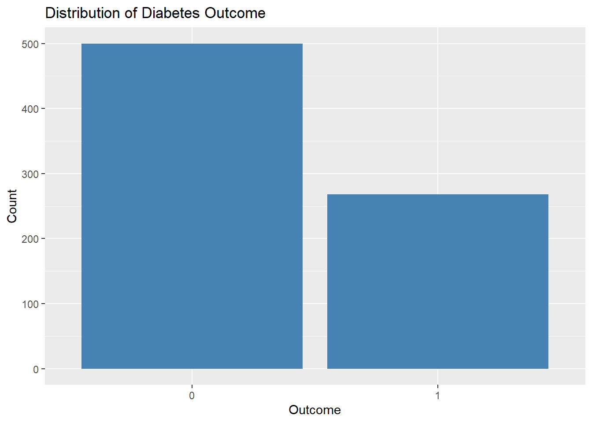
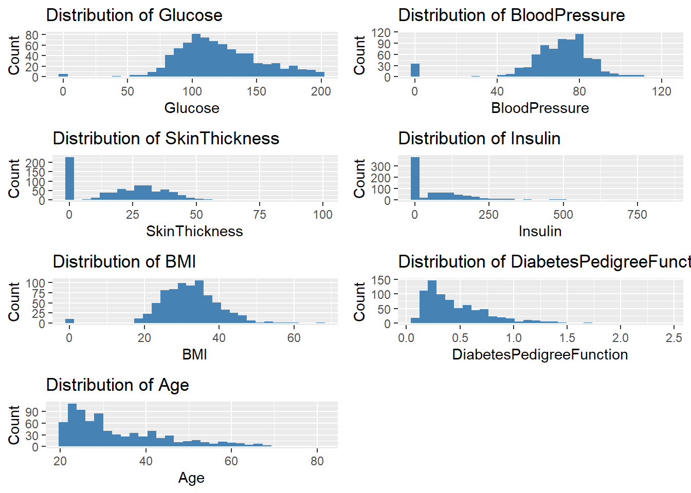
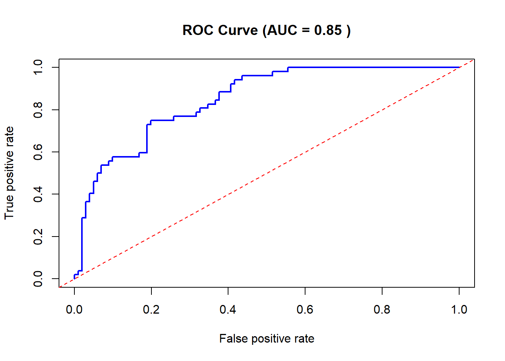

Code
# Load necessary libraries
suppressWarnings({
library(tidyverse)
library(caret)
library(gridExtra)
library(GGally)
library(ROCR)
library(knitr)
library(kableExtra)
})This dataset is originally from the National Institute of Diabetes and Digestive and Kidney Diseases. The objective of the dataset is to diagnostically predict whether a patient has diabetes, based on certain diagnostic measurements included in the dataset
August 24, 2024
This project uses a dataset from the National Institute of Diabetes and Digestive and Kidney Diseases to predict whether a patient has diabetes based on diagnostic measurements. The patients are female and of Pima Indian heritage, aged at least 21 years.
| Pregnancies | Glucose | BloodPressure | SkinThickness | Insulin | BMI | DiabetesPedigreeFunction | Age | Outcome |
|---|---|---|---|---|---|---|---|---|
| 6 | 148 | 72 | 35 | 0 | 33.6 | 0.627 | 50 | 1 |
| 1 | 85 | 66 | 29 | 0 | 26.6 | 0.351 | 31 | 0 |
| 8 | 183 | 64 | 0 | 0 | 23.3 | 0.672 | 32 | 1 |
| 1 | 89 | 66 | 23 | 94 | 28.1 | 0.167 | 21 | 0 |
| 0 | 137 | 40 | 35 | 168 | 43.1 | 2.288 | 33 | 1 |
| 5 | 116 | 74 | 0 | 0 | 25.6 | 0.201 | 30 | 0 |
| Pregnancies | Glucose | BloodPressure | SkinThickness | Insulin | BMI | DiabetesPedigreeFunction | Age | Outcome | |
|---|---|---|---|---|---|---|---|---|---|
| Min. : 0.000 | Min. : 0.0 | Min. : 0.00 | Min. : 0.00 | Min. : 0.0 | Min. : 0.00 | Min. :0.0780 | Min. :21.00 | Min. :0.000 | |
| 1st Qu.: 1.000 | 1st Qu.: 99.0 | 1st Qu.: 62.00 | 1st Qu.: 0.00 | 1st Qu.: 0.0 | 1st Qu.:27.30 | 1st Qu.:0.2437 | 1st Qu.:24.00 | 1st Qu.:0.000 | |
| Median : 3.000 | Median :117.0 | Median : 72.00 | Median :23.00 | Median : 30.5 | Median :32.00 | Median :0.3725 | Median :29.00 | Median :0.000 | |
| Mean : 3.845 | Mean :120.9 | Mean : 69.11 | Mean :20.54 | Mean : 79.8 | Mean :31.99 | Mean :0.4719 | Mean :33.24 | Mean :0.349 | |
| 3rd Qu.: 6.000 | 3rd Qu.:140.2 | 3rd Qu.: 80.00 | 3rd Qu.:32.00 | 3rd Qu.:127.2 | 3rd Qu.:36.60 | 3rd Qu.:0.6262 | 3rd Qu.:41.00 | 3rd Qu.:1.000 | |
| Max. :17.000 | Max. :199.0 | Max. :122.00 | Max. :99.00 | Max. :846.0 | Max. :67.10 | Max. :2.4200 | Max. :81.00 | Max. :1.000 |
##3.3 Missing Values
Pregnancies Glucose BloodPressure
0 0 0
SkinThickness Insulin BMI
0 0 0
DiabetesPedigreeFunction Age Outcome
0 0 0 #4. Exploratory Data Analysis (EDA) ##4.1 Univariate Analysis ###4.1.1 Distribution of Outcome Variable

###4.1.2 Distribution of Continuous Variables
# Plot distributions of all continuous variables
continuous_vars <- df %>% select(-Outcome, -Pregnancies)
continuous_plots <- lapply(names(continuous_vars), function(var) {
ggplot(df, aes_string(x=var)) +
geom_histogram(fill="steelblue", bins=30) +
labs(x=var, y="Count", title=paste("Distribution of", var))
})Warning: `aes_string()` was deprecated in ggplot2 3.0.0.
ℹ Please use tidy evaluation idioms with `aes()`.
ℹ See also `vignette("ggplot2-in-packages")` for more information.
Pregnancies Glucose BloodPressure SkinThickness Insulin BMI
1 6 0.8477713 0.1495433 0.9066791 -0.6924393 0.2038799
2 1 -1.1226647 -0.1604412 0.5305558 -0.6924393 -0.6839762
3 8 1.9424580 -0.2637694 -1.2873733 -0.6924393 -1.1025370
4 1 -0.9975577 -0.1604412 0.1544326 0.1232213 -0.4937213
5 0 0.5037269 -1.5037073 0.9066791 0.7653372 1.4088275
6 5 -0.1530851 0.2528715 -1.2873733 -0.6924393 -0.8108128
DiabetesPedigreeFunction Age Outcome
1 0.4681869 1.42506672 1
2 -0.3648230 -0.19054773 0
3 0.6040037 -0.10551539 1
4 -0.9201630 -1.04087112 0
5 5.4813370 -0.02048305 1
6 -0.8175458 -0.27558007 0
Call:
glm(formula = Outcome ~ ., family = binomial, data = dfTrain)
Coefficients:
Estimate Std. Error z value Pr(>|z|)
(Intercept) -1.31946 0.18002 -7.330 2.31e-13 ***
Pregnancies 0.11852 0.03579 3.311 0.000929 ***
Glucose 1.12827 0.13380 8.433 < 2e-16 ***
BloodPressure -0.25320 0.11086 -2.284 0.022374 *
SkinThickness -0.01560 0.12010 -0.130 0.896648
Insulin -0.10500 0.11341 -0.926 0.354533
BMI 0.67938 0.13114 5.180 2.21e-07 ***
DiabetesPedigreeFunction 0.25926 0.10642 2.436 0.014845 *
Age 0.17927 0.12106 1.481 0.138676
---
Signif. codes: 0 '***' 0.001 '**' 0.01 '*' 0.05 '.' 0.1 ' ' 1
(Dispersion parameter for binomial family taken to be 1)
Null deviance: 797.28 on 614 degrees of freedom
Residual deviance: 583.64 on 606 degrees of freedom
AIC: 601.64
Number of Fisher Scoring iterations: 5Confusion Matrix and Statistics
Reference
Prediction 0 1
0 91 22
1 10 30
Accuracy : 0.7908
95% CI : (0.7178, 0.8523)
No Information Rate : 0.6601
P-Value [Acc > NIR] : 0.0002786
Kappa : 0.5063
Mcnemar's Test P-Value : 0.0518299
Sensitivity : 0.9010
Specificity : 0.5769
Pos Pred Value : 0.8053
Neg Pred Value : 0.7500
Prevalence : 0.6601
Detection Rate : 0.5948
Detection Prevalence : 0.7386
Balanced Accuracy : 0.7390
'Positive' Class : 0

diabetes_analysis.qmd.diabetes.csv file is in your working directory..qmd file in an R or Quarto-compatible IDE (such as RStudio) and render it to create the report.This template includes loading necessary packages without warnings, performing EDA with visualizations, and running a logistic regression analysis.
---
title: "Logistic Regression for Predictive Modeling"
description: |
This dataset is originally from the National Institute of Diabetes and Digestive and Kidney Diseases. The objective of the dataset is to diagnostically predict whether a patient has diabetes, based on certain diagnostic measurements included in the dataset
date: 2024-08-24
categories: [Quarto website]
image: 2024-08-24-191338.png
draft: false
format:
html:
toc: true
code-fold: true
execute:
echo: true
---
# 1. Introduction
This project uses a dataset from the National Institute of Diabetes and Digestive and Kidney Diseases to predict whether a patient has diabetes based on diagnostic measurements. The patients are female and of Pima Indian heritage, aged at least 21 years.
# 2. Load Packages
```{r setup, message=FALSE, warning=FALSE}
# Load necessary libraries
suppressWarnings({
library(tidyverse)
library(caret)
library(gridExtra)
library(GGally)
library(ROCR)
library(knitr)
library(kableExtra)
})
```
# 3. Load and Explore Data
## 3.1 Load the Dataset
```{r}
df <- read.csv("diabetes.csv")
# Display the first few rows
df %>%
head() %>%
kable(caption = "First Few Rows of the Diabetes Dataset") %>%
kable_styling(bootstrap_options = c("striped", "hover", "condensed"),
full_width = F,
position = "left")
```
## 3.2 Summary Statistics
```{r}
# Get summary statistics
summary_stats <- summary(df)
kable(summary_stats, caption = "Summary Statistics of the Dataset") %>%
kable_styling(bootstrap_options = c("striped", "hover", "condensed"),
full_width = F,
position = "left")
```
##3.3 Missing Values
```{r}
# Check for missing values
colSums(is.na(df))
```
#4. Exploratory Data Analysis (EDA)
##4.1 Univariate Analysis
###4.1.1 Distribution of Outcome Variable
```{r}
# Distribution of the Outcome variable
ggplot(df, aes(x=factor(Outcome))) +
geom_bar(fill="steelblue") +
labs(x="Outcome", y="Count", title="Distribution of Diabetes Outcome")
```
###4.1.2 Distribution of Continuous Variables
```{r}
# Plot distributions of all continuous variables
continuous_vars <- df %>% select(-Outcome, -Pregnancies)
continuous_plots <- lapply(names(continuous_vars), function(var) {
ggplot(df, aes_string(x=var)) +
geom_histogram(fill="steelblue", bins=30) +
labs(x=var, y="Count", title=paste("Distribution of", var))
})
grid.arrange(grobs=continuous_plots, ncol=2)
```
## 4.2 Bivariate Analysis
### 4.2.1 Correlation Matrix
```{r}
# Correlation matrix
corr_matrix <- cor(df %>% select(-Outcome))
ggcorr(corr_matrix, label=TRUE, label_size=3)
```
## 4.2.2 Relationships with Outcome
```{r}
# Scatter plots for continuous variables vs Outcome
scatter_plots <- lapply(names(continuous_vars), function(var) {
ggplot(df, aes_string(x=var, y="Outcome")) +
geom_point(alpha=0.5) +
labs(x=var, y="Outcome", title=paste(var, "vs Outcome"))
})
grid.arrange(grobs=scatter_plots, ncol=2)
```
# 5. Logistic Regression
```{r}
# Standardizing continuous variables
df_scaled <- df
df_scaled[,-c(1,9)] <- scale(df_scaled[,-c(1,9)])
head(df_scaled)
```
## 5.1.2 Train-Test Split
```{r}
# Create training (80%) and test (20%) sets
set.seed(123)
trainIndex <- createDataPartition(df_scaled$Outcome, p = .8,
list = FALSE,
times = 1)
dfTrain <- df_scaled[ trainIndex,]
dfTest <- df_scaled[-trainIndex,]
```
## 5.2 Model Training
```{r}
# Fit logistic regression model
logit_model <- glm(Outcome ~ ., data=dfTrain, family=binomial)
# Summary of the model
summary(logit_model)
```
## 5.3 Model Evaluation
```{r}
# Predict on test data
pred_probs <- predict(logit_model, newdata=dfTest, type="response")
pred_classes <- ifelse(pred_probs > 0.5, 1, 0)
```
```{r}
# Confusion matrix
conf_matrix <- confusionMatrix(factor(pred_classes), factor(dfTest$Outcome))
conf_matrix
```
```{r}
# ROC curve and AUC
pred <- prediction(pred_probs, dfTest$Outcome)
perf <- performance(pred, "tpr", "fpr")
auc <- performance(pred, "auc")@y.values[[1]]
# Plot ROC curve
plot(perf, col="blue", lwd=2, main=paste("ROC Curve (AUC =", round(auc, 2), ")"))
abline(a=0, b=1, lty=2, col="red")
```
### Steps to Use This Template:
1. **Save the .qmd file**: Copy the content above into a text editor and save it as `diabetes_analysis.qmd`.
2. **Place the dataset**: Ensure the `diabetes.csv` file is in your working directory.
3. **Render the Quarto document**: Open the `.qmd` file in an R or Quarto-compatible IDE (such as RStudio) and render it to create the report.
This template includes loading necessary packages without warnings, performing EDA with visualizations, and running a logistic regression analysis.